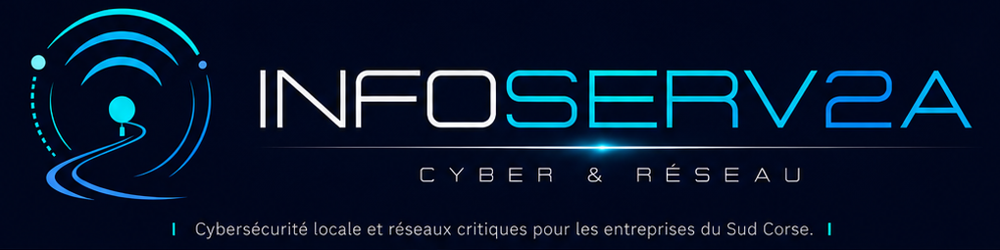

Données personnelles
Politique de confidentialité
INFOSERV2A s’inscrit dans une logique de clarté, de confidentialité et de limitation des données collectées.
Dans sa version de présentation, le site peut collecter les informations transmises volontairement via le formulaire de contact : nom, entreprise, secteur, commune, téléphone, email, type de demande, urgence et message.
Ces données servent uniquement à répondre à la demande, organiser un échange ou préparer une proposition adaptée au contexte professionnel.
Principes de traitement
Minimisation, sécurité et finalité
Les données ne doivent pas être revendues. Elles doivent être conservées pendant une durée raisonnable au regard de la finalité de contact, puis supprimées ou archivées selon les obligations applicables.
- minimisation des données collectées
- information claire de l’utilisateur
- sécurisation du formulaire
- possibilité de demander accès ou suppression
- adaptation juridique avant production officielle